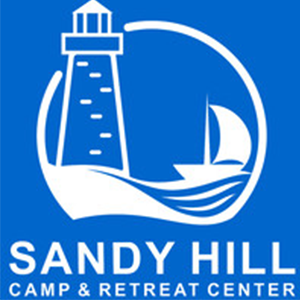

I edit articles approximately 8 hours each week on accuracy, grammar and AP style for The Diamondback, an independent student-run newspaper.
(January 2020-Present)
Freelance Writer, The Sentinel Newspapers
I wrote articles for this now discontinued, local publication under the guidance of former city editor José Umana.
(December 2019 to January 2020)
Staff Writer, Stories Beneath the Shell
I wrote weekly articles in the Fall of 2019 on University of Maryland events for this student-run publication, which improved my reporting skills. (September 2019-December 2019)
Intern, The Washington Examiner
I interned for Tim Carney, the opinion editor and commentary writer. I wrote blurbs for the opinion pieces and learned the basics of Adobe Premiere.
(May 2018)
Work Experience
Tour Guide, Maryland Images
I help prospective students at the University of Maryland by leading and organizing group tours on campus.
(September 2019-Present)
Diversity and Inclusion Chair, Zeta Tau Alpha
I help the Iota Omega chapter of Zeta Tau Alpha become more aware about diversity and inclusion through different conversations and events.
(September 2019-Present)
 Counselor, Sandy Hill Camp
I facilitated and led various high and low elements on the camp’s ropes course after a week of extensive training. I helped campers ages 8 to 16 grow in courage and team work through different ropes course elements. I gained greater collaboration skills after working with other young adults from around the world.
(Summer 2018 and Summer 2019)
Education
Bachelor of Arts, Journalism, University of Maryland, 2022
I am a College Park Scholar in the Media, Self and Society Program. This two-year, innovative living and learning program enables me to explore the dynamics of media theory and its implications on a global scale.
Skills
Photo Editing
I excelled in my photojournalism class at the University of Maryland under the guidance of Sora DeVore, veteran photographer and freelancer for The Washington Post. I have experience photographing portraits, landscapes and dynamic settings. I am able to effectively edit photographs using Adobe Lightroom.
Journalism
I am receiving a thorough and rigorous education as a student in the Philip Merrill College of Journalism at the University of Maryland. With my educational experiences, along with first-hand exposure through various on-campus publications, I strive to both create and edit journalism with the utmost accuracy.
Diversity and Inclusion
I received training in diversity and inclusion through the Department of Fraternity and Sorority Life at the University of Maryland. My position as diversity and inclusion chair has helped me establish bonds in my Greek chapter and educate others on topics such as microagressions and cultural appropriation.
I helped paint the main location in Santiago, worked with youth in the program and helped redecorate their satellite school in Villa Bisonó.
(January 2020)
Stepping Stones Shelter - Rockville, MD
I helped tutor children ages 6 to 12 in various subjects, organize donations and clean out multiple parts of the shelter.
(September 2015-May 2019)


 Copy Editor, The Diamondback
Copy Editor, The Diamondback
 Freelance Writer, The Sentinel Newspapers
Freelance Writer, The Sentinel Newspapers
 Staff Writer, Stories Beneath the Shell
Staff Writer, Stories Beneath the Shell
 Tour Guide, Maryland Images
Tour Guide, Maryland Images
 Bachelor of Arts, Journalism, University of Maryland, 2022
Bachelor of Arts, Journalism, University of Maryland, 2022 Photo Editing
Photo Editing Diversity and Inclusion
Diversity and Inclusion Acción Callejera - Dominican Republic
Acción Callejera - Dominican Republic